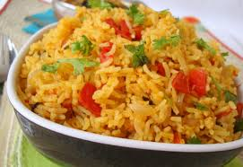

Tomato Rice
Ingredients
- Cooked Rice - 2 cups
- Onion - 1/2 (chopped)
- Ginger garlic Paste - 1 tsp
- Tomatoes - 1 (chopped) + 2 (pureed)
- Green Chilies - 2 (chopped)
- Red Chili Powder - 2 tsp
- Garam Masala - a pinch
- Cilantro - for garnish
- Salt - as needed
- Oil/Ghee - 2 tbsp
- Mustard seeds - 1/4 tsp
- Fennel/Cumin seeds - 1/4 tsp
- Channa Dal - 1 tsp (optional)
- Urad dal - 1 tsp
- Cashews - 1 tbsp
- Curry Leaves - 1 spring
Directions
- You can cook the rice or use leftover rice to make tomato rice.
- Heat oil in a pan and splutter the mustard seeds.
- Add channa dal, urad dal and fennel seeds and fry till it turns reddish brown in colour.
- Add cashews, green chilies and curry leaves.
- Add the onions and fry till it turns translucent.
- Add ginger garlic paste and fry for 30 seconds.
- Next add the pureed tomatoes and cook till the raw smell vanishes.
- Add the chopped tomato, salt, garam masala and chili powder. Cook for a couple of minutes.
- Now toss the cooked rice with this masala. Check for salt and other seasonings and adjust according to your taste.
- Finally sprinkle with some chopped cilantro and switch off.